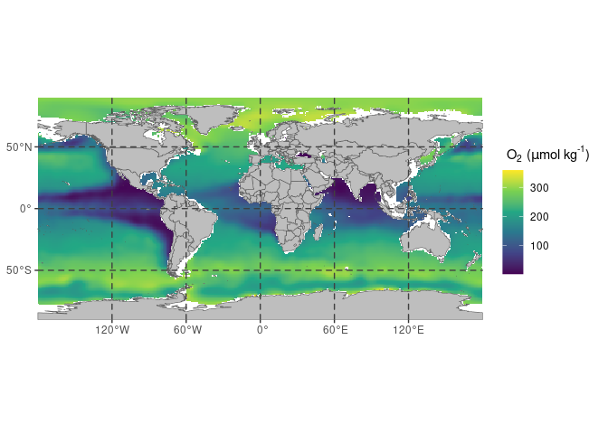

The goal of oceanexplorer is to enable easy access and exploration of the World Ocean Atlas of the US agency NOAA.

Check the app
Check the app here: https://martinschobben.shinyapps.io/oceanexplorer/
Funding
This project was funded by ERC Starting grant number 802835, OceaNice, awarded to Peter Bijl.
Credits
The construction of the R (R Core Team 2023) package oceanexplorer and associated documentation was aided by the packages; devtools (Wickham, Hester, et al. 2022), roxygen2 (Wickham, Danenberg, et al. 2022), testthat (Wickham 2023), shinytest (Chang, Csárdi, and Wickham 2023), vdiffr (Henry et al. 2023), knitr (Xie 2014 ; Xie 2015), rmarkdown (Xie, Allaire, and Grolemund 2018; Xie, Dervieux, and Riederer 2020), and the superb guidance in the book: R packages: organize, test, document, and share your code, by Wickham (2015).
Data transformation, cleaning and visualization is performed with: dplyr (Wickham, François, et al. 2023), and ggplot2 (Wickham, Chang, et al. 2023).
In addition, this package relies on a set of packages for spatial data analysis: sf (Pebesma 2023a) and stars (Pebesma 2023b).
The app is build with shiny (Chang et al. 2022) and the guidance in the book: Mastering Shiny: Build Interactive Apps, Reports & Dashboards (Wickham 2020) was a great help in learning how to develop such applications. Furthermore, the packages shinyjs (Attali 2021), waiter (Coene 2022), bslib (Sievert, Cheng, and Aden-Buie 2023) and thematic (Sievert, Schloerke, and Cheng 2023) ensure user-friendliness of the interface and visually pleasing graphics.
Installation
You can install the latest version of oceanexplorer from CRAN
# Install oceanexplorer from CRAN:
install.packages("oceanexplorer")Example
The package allows extraction of global databases of several physical and chemical parameters of the ocean from the NOAA World Ocean Atlas.
library(oceanexplorer)
# obtain the NOAA world ocean atlas for oxygen content
oxy_global <- get_NOAA("oxygen", 1, "annual")Slice a specific interval from the array with filter_NOAA(), like so:
# filter a depth of 200 meters to show OMZs
(oxy_omz <- filter_NOAA(oxy_global, depth = 200))
#> stars object with 2 dimensions and 1 attribute
#> attribute(s):
#> Min. 1st Qu. Median Mean 3rd Qu. Max. NA's
#> o_an 0.9701567 164.1833 218.6721 206.2584 266.9612 359.0279 26041
#> dimension(s):
#> from to offset delta refsys x/y
#> lon 1 360 -180 1 WGS 84 [x]
#> lat 1 180 -90 1 WGS 84 [y]In addition, the sliced array can be plotted, like so:
# plot the NOAA world ocean atlas for oxygen content
plot_NOAA(oxy_omz, depth = NULL)
The same plot can be produced by taking the original data and supplying a value to the depth argument and specifying the range of oxygen content to oxy_omz.
# plot the NOAA world ocean atlas for oxygen content
plot_NOAA(oxy_global, depth = 200, rng = range(oxy_omz[[1]]))
Interactive exploration
Lastly, the package can launch a Shiny app for interactive exploration of the datasets.
# launch an interactive shiny session
NOAA_app()The RStudio addin can be launched within the RStudio viewer pain by executing the following code, or by using the Addins drop down menu in the task-bar.
# launch an interactive shiny session
NOAA_addin()Code of Conduct
Please note that the oceanexplorer project is released with a Contributor Code of Conduct. By contributing to this project, you agree to abide by its terms.